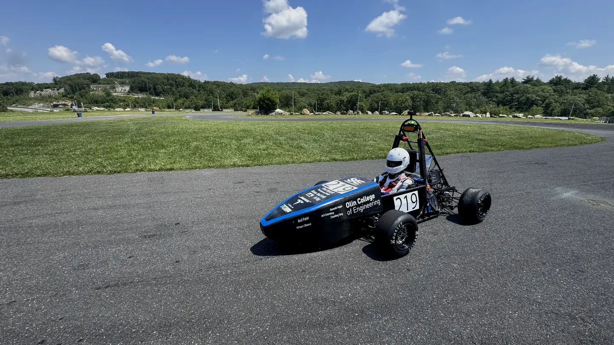
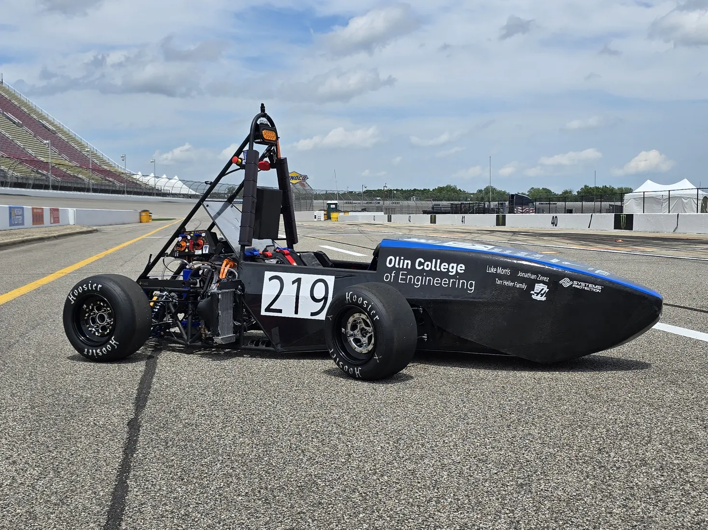
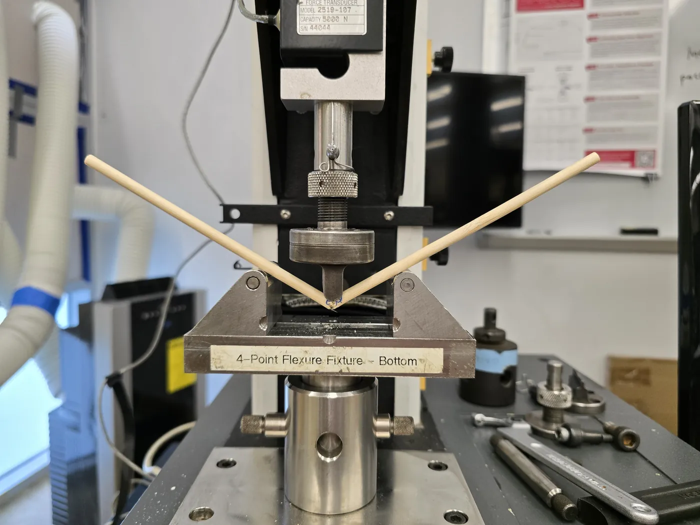

Mk.8 steering system
Closer driver reach; 0.9 kg removed from the bearing cages.

Mechanical engineering/Olin ’28
Leading 30
mechanical engineersMechanical Lead · Olin Electric Motorsports
Race-car systems.
Robotics. Real hardware.
Designed, built,
and tested.
01ProjectsShowing 16 of 16 projects
Closer driver reach; 0.9 kg removed from the bearing cages.

Pressure-test failures drove reinforcement and a 45-run study.

Design review: 23% less rotor mass, 19% less inertia.

Gantry motion and calibration produced a 2,206-point scan.


30 tensile specimens and 11 rods supplied measured stiffness.

200 lb payload target; 300 lb carried in testing.

20-ply 3K twill shell with local patch plies; cured, demolded and trimmed.

Designed and fabricated the Mk.7 seat in 5052-H32 aluminum.

An auditable Fluent workflow built from 11 real failures.

Adjustable cue launcher, working after machining and fit revisions.

33.6% lighter; 18 s lap against an under-15 s target.

A 2.5-day gantry build exposed an actuator duty-cycle limit.

Raw walnut, CNC routing, and fixtures led to a playable guitar.

About $80 prototype cost; student trials shaped the kit.

Cone-handling mechanisms for a Massachusetts Championship winning alliance.
No matching projects. Try another search or category.
02Leadership30 engineers. One race car.

I lead 30 mechanical engineers across four subteams, from design reviews and fabrication to vehicle integration. Previously, I led the cockpit: brakes, steering, and driver fit.
30Mechanical engineers
4Subteams
3D StudioThe interactive portfolio
Explore the space. Pick up a project. Look at the engineering from every angle.
Enter the 3D Studio
03How I work



Turn constraints into load cases, kinematics, and buildable assemblies.
SolidWorks · MATLAB · FEA · CFD
Thermal & structural modelingCarry tolerances, tooling, and assembly access from CAD to the finished part.
CNC · Lathe · TIG · Composites
From machined parts to steering systemUse calibrated sensors and physical tests to challenge the model.
Python · Arduino · Sensors · Testing
Calibration in practice04Let’s build something
Seeking a Summer 2027 internship in vehicle systems, robotics, or manufacturing.